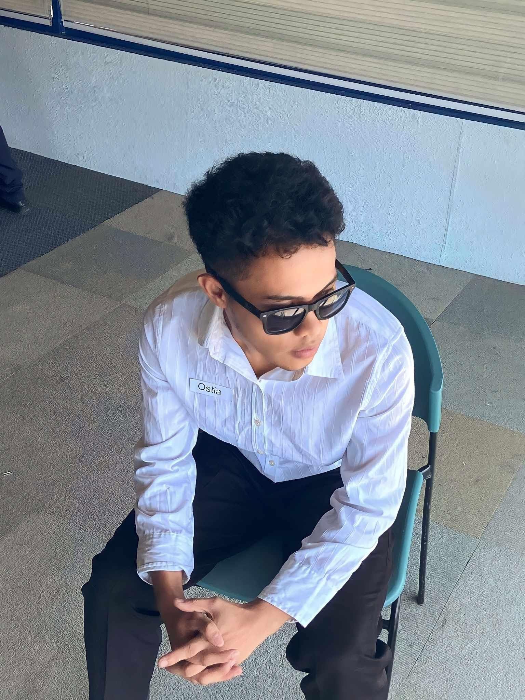

SVC / 01
Computer Troubleshooting
Identify common computer issues, check symptoms, and work through basic diagnostic steps.
Discuss a repair ↗
JEFFERSON T. OSTIACOMPUTER REPAIR • STUDENT PORTFOLIOJEFFERSON T. OSTIA - SECTION 9
An aspiring computer repair technician who enjoys diagnosing issues, working with hardware, and getting systems running smoothly again.
GOOD REPAIRS START WITH GOOD QUESTIONS.
LEARN • TEST • IMPROVE01 / THE TECHNICIAN
CURIOUS MIND. PRACTICAL APPROACH.
ALWAYS LEARNING.
BSIT 4 / Section 9
I like understanding why things stop working — and learning how to make them work again.
I’m Jefferson, a fourth-year Bachelor of Science in Information Technology student. My interests center on computer troubleshooting, hardware installation, software setup, and routine maintenance. I’m building my skills through practice, patience, and a willingness to learn from every technical challenge.
This portfolio shares the services I’m learning, the skills I’m developing, and projects that reflect my growth as an IT student.
02 / WHAT I CAN HELP WITH
FOUNDATIONAL SERVICES
WITH A CAREFUL APPROACH
Identify common computer issues, check symptoms, and work through basic diagnostic steps.
Discuss a repair ↗Assist with installing and replacing compatible components using careful handling practices.
Discuss hardware ↗Help with basic operating-system setup, driver installation, updates, and useful applications.
Discuss software ↗Support routine care such as dust checks, basic cleanup, updates, and performance checks.
Plan maintenance ↗! These are learning-level services. Complex repairs, data recovery, and electrical work should be handled by a qualified professional.
03 / CURRENT TOOLKIT
BUILDING CONFIDENCE
ONE TASK AT A TIME
Recognizing common PC components and their basic roles.
Checking symptoms and narrowing down possible causes.
Setting up basic software, drivers, and system updates.
Learning consistent and safe computer-care routines.
04 / WORK & PRACTICE
A SPACE FOR SCHOOL WORK,
PRACTICE & PROGRESS
A web-based project concept for organizing waste collection and recycling activities.
Ask about this project ↗A place to document common symptoms, diagnostic steps, and lessons learned during practice.
Ask about my process ↗A basic checklist concept for keeping computer systems clean, updated, and ready for use.
Discuss the checklist ↗Project cards are starter portfolio entries. Update them with actual completed work, screenshots, and repository links before publishing.
05 / PHOTO ARCHIVE
TAP ANY PHOTO TO
OPEN THE PREVIEW
Replace each sample image with your own photo. The numbered labels make it easy to identify which image to update.
06 / LET'S CONNECT
Have a technical question, a school project idea, or simply want to share knowledge? I'm always open to new opportunities, collaborations, and learning together. Let's start a conversation send me a message and let’s make it happen.
Find me on Facebook ↗